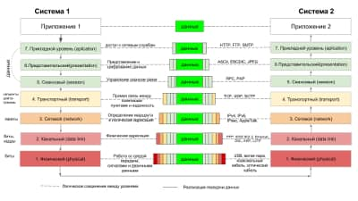
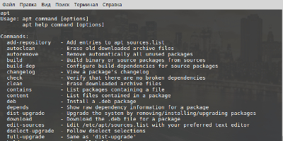

Сетевые протоколы
Конспект для чайников о семиуровневой модели OSI и работе сетевых протоколов. Я просмотрела несколько лекций на youtube и тезисно записала ключевые моменты для понимания основных принципов работы сети.

Шпаргалка. Команды Linux
В процессе освоения терминала и консоли я стала вести шпаргалку команд. Начинаю с простейшего, постепенно заменяя действия мышкой на работу с терминалом.
Бесплатные аналоги платных программ и сервисов
Я делюсь списком бесплатных аналогов, которыми пользуюсь в повседневной жизни. Это не только программы, но и иконки для сайта, картинки, музыка.
HTML, CSS, JS. С чего начать
[статья в процессе написания]
Ресурсы, которыми я пользовалась при изучении и создании моего первого сайта.